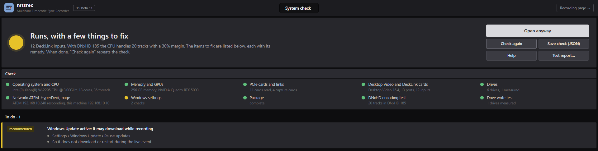
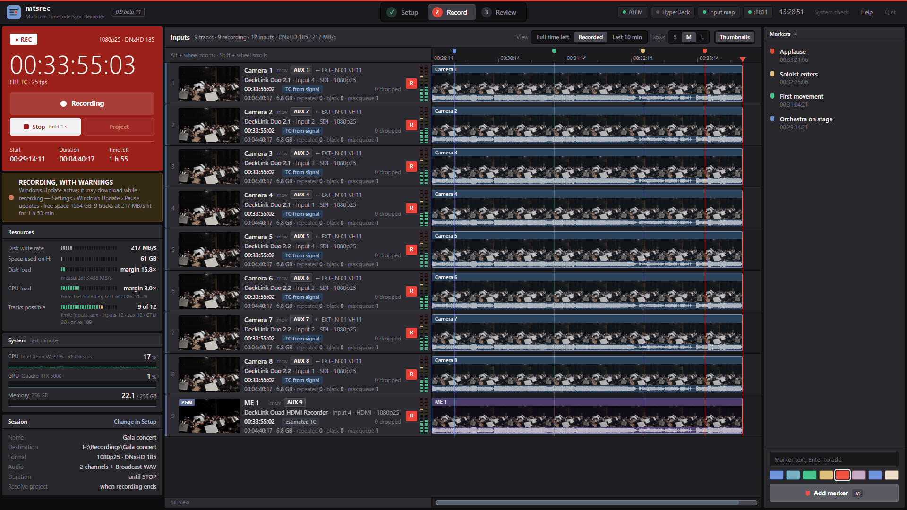
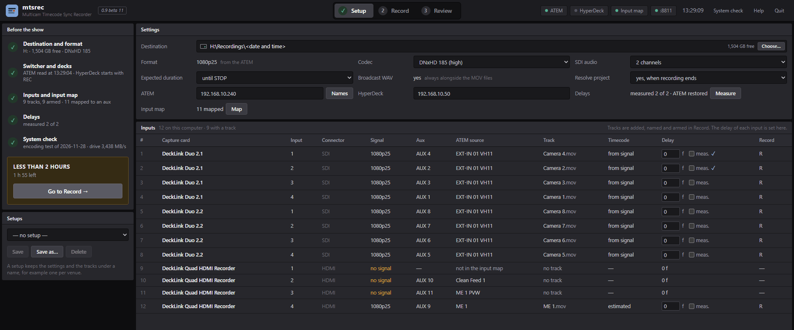
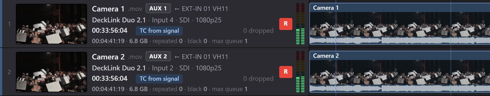
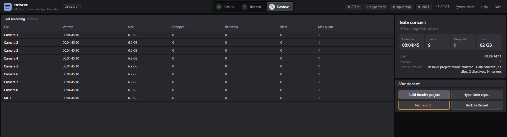

Program version {{VERSIONE}} · manual revision 08 · 28 November 2026
This is a beta version, free of charge and provided as is, without any warranty. Never use it as the only recorder of a show you cannot repeat: always keep another recording running.
ATEM, DeckLink, HyperDeck, Desktop Video, DaVinci Resolve and Blackmagic Design are trademarks of Blackmagic Design Pty Ltd. Premiere Pro is a trademark of Adobe. Multicam Timecode Sync Recorder is not affiliated with or endorsed by any of them.
Multicam Timecode Sync Recorder records every DeckLink input of a Windows computer to its own file while an ATEM switcher runs the show. This is called ISO recording: one file per camera, plus the program if you want it.
Recording uses DNxHD in HD and DNxHR in UHD, in MOV files, with the SDI audio alongside as Broadcast WAV. The format and frame rate are those of the ATEM: the recorder reads them from the switcher and records exactly that, with no scaling and no frame rate conversion (6.3).
| Item | Needed for | Notes |
|---|---|---|
| Windows 10 or 11, 64-bit | everything | Windows only, for now. |
| Blackmagic DeckLink cards | capture | SDI inputs for timecode from the ATEM. For UHD, 12G-SDI or HDMI 2.0 inputs (see chapter 12). |
| Blackmagic Desktop Video 16 or later | required: the driver of the cards | Free, from the Blackmagic Design support page. |
| An ATEM switcher with aux outputs | timecode, cuts, source names | On the same network as the computer. Its aux outputs are cabled to the DeckLink inputs over SDI. |
| DaVinci Resolve Studio | the Resolve project at STOP | Optional. Without it you still get FCPXML, Premiere XML and EDL. The free version of Resolve does not accept scripts from other programs. |
| Microsoft Edge WebView2 Runtime | the recorder's own window | Optional: already present on most Windows 10 and 11 computers. Without it the recorder opens in the web browser and works the same. |
| A fast drive | recording | Preferably NVMe. At 25 fps each DNxHD 185 track writes about 23 MB/s, each DNxHR HQ track about 91 MB/s. At 50 and 60 fps it is twice as much. |
Nothing else to install. Python, FFmpeg and the other components travel inside the program folder.
When the recorder opens it checks for Desktop Video, DaVinci Resolve Studio and WebView2. If something is missing, a window lists it with the reason and a Download… button that opens the official page in your web browser. Install from there, restart the computer if the installer asks, then open the recorder again.
The program never downloads or installs anything by itself.
github.com/angeliandrea/mtsrec/releases: one file, mtsrec-version.msi. Next to it a .sha256 file holds its fingerprint, if you want to check the download.%LOCALAPPDATA%\Programs\mtsrec, with a shortcut on the desktop.The Start menu gets a Multicam Timecode Sync Recorder folder:
| Shortcut | What it does |
|---|---|
| Multicam Timecode Sync Recorder | Opens the recorder in its own window. |
| Multicam Timecode Sync Recorder - in browser | Opens the recorder in the web browser, for computers without WebView2 or when you prefer it. |
| Multicam Timecode Sync Recorder - system check | Runs the system check again. |
| Multicam Timecode Sync Recorder - user manual | This manual. |
| Multicam Timecode Sync Recorder - beta tester guide | What to test and how to send the results. |
| Multicam Timecode Sync Recorder - licenses | The licenses of the program and of the included components. |
Updating: run the installer of the new version. It replaces the program and keeps your settings, setups and input map.
Coming from WinISORecorder, the name of the program up to 0.9 beta 5: just install. The installer removes WinISORecorder, the first start moves settings, setups and input map from %USERPROFILE%\WinISORecorder to %USERPROFILE%\mtsrec and removes the old shortcuts. If WinISORecorder was installed for all users, the installer stops and asks you to uninstall it first from Windows Settings › Apps, which needs administrator rights; your settings are kept.
Installing without questions, for example on several machines: msiexec /i mtsrec-version.msi /qn. Add DESKTOP_SHORTCUT=0 for no desktop shortcut.
Removing: Windows Settings › Apps › Multicam Timecode Sync Recorder › Uninstall. Your recordings are never touched. Settings, setups and the input map stay in %USERPROFILE%\mtsrec: delete that folder by hand if you want nothing left.
The first time, before its own window, the recorder checks the machine. It takes about twenty seconds and runs only once: the result is saved, and the check repeats by itself when the hardware changes.

It covers:
The verdict is green, yellow or red. Fix the red items before recording. Each item in To do comes with its remedy, and Check again repeats the check. Open recorder goes on to the recorder window. Save check (JSON) saves the full result to a file.
The check opens again at any time with System check in the top bar of the recorder window, or from the Start menu.
Connect each ATEM aux output to a DeckLink input with an SDI cable. Put on each aux the source you want to record: a camera, the program, the clean feed. The ATEM embeds its timecode in every SDI output, and that is what lines the files up.
Before recording, every track should show TC from signal. A track without it is not receiving the ATEM timecode: check that its input comes from the ATEM over SDI.
No device knows which aux is cabled to which DeckLink input. The input map finds out once and saves it. With the map, every track shows its aux and the name of the source on it (AUX 3 ← Camera 3), the file takes that name, Add all inputs puts the mapped inputs first in aux order, and the Resolve project knows which ATEM input each track records.
To make it:
For each aux the recorder switches it for about a second to black and then to bars, and watches which open input changes. Then it puts the aux back as it was, and at the end it reads the ATEM again to verify every aux. The state of the aux outputs is saved on disk before anything is changed. An input that answers to more than one aux is reported and left out of the map: check its cabling. An input without signal cannot be tested: it keeps the aux it had in the previous map, unless another input has taken that aux.
The input map writes to the ATEM: make it off air only, never during a show. It cannot run while recording, and REC and Measure are refused until it has finished. If the ATEM does not answer, the map is refused at once.
Stopping the map. While the map runs, Map and Map inputs… become Stop. Press one of them, or close the window and answer Yes to Stop it and close the recorder?: the aux outputs are put back as they were, verified, and the previous map is kept. It takes a few seconds.
The map is saved to %USERPROFILE%\mtsrec\porte.json. Make it again whenever the cabling changes. The Input map light in the top bar shows how many inputs are mapped, and the menu of free inputs shows each input with its aux and source, or not in the input map.
The same map can be made from a command prompt with the recorder closed, for example to map only some aux outputs. With --prova the script reads the ATEM and opens the inputs without changing anything.
cd "%LOCALAPPDATA%\Programs\mtsrec" python\python.exe script\mappa_porte.py --atem <ATEM address> --aux 9-12

The window has a top bar and three pages, in the order of the work: Setup before the show, Record during the show, Review after it. The recorder opens on the page you left.

Before the show, on the left, lists five steps with their outcome: destination and format, switcher and decks, inputs and input map, delays, system check. Under them a box repeats the status line of the Record page, with Go to Record.
Setups: a saved configuration, settings and tracks together, recalled by name, for example one per venue. Save updates the chosen setup, Save as… creates a new one, Delete removes it.
Settings are locked while recording.
| Setting | What it does |
|---|---|
| Destination | Drive and folder of the recordings, with the free space. Choose… opens the drive and folder picker, which also takes network paths (\\server\folder), creates folders and names the recording. Left empty, the name is the date and time of REC. |
| Codec | High, medium or low quality, the same for every track. The names change with the frame rate: see 6.3. |
| Format | Not a choice: the format of the ATEM, read from the switcher, such as 1080p25 · from the ATEM. See 6.3. |
| SDI audio | 2, 8 or 16 channels embedded in the SDI, recorded as they are, with no processing. |
| Expected duration | Until STOP, or a set time. Tracks possible and the status line use it to tell you whether the drive holds the whole show. |
| Broadcast WAV | Always written alongside the MOV files, with the same timecode. |
| Resolve project | yes, when recording ends: the Resolve project is built at STOP. no: only FCPXML, Premiere XML and EDL. |
| ATEM | The address of the ATEM, found by itself on the network when possible. Names reads the source names on the aux outputs again. |
| HyperDeck | The address of a HyperDeck recording the program alongside, optional: the recorder starts and stops it with REC and STOP. |
| Delays | The delay of each input is set in the Inputs table. Measure measures it: see chapter 9. |
| Input map | How many inputs are linked to an ATEM aux. Map makes the map again: see 5.2. |
Inputs lists every DeckLink input of the computer: capture card, input and connector, the signal it receives, the ATEM aux output cabled to it and the source on that aux, the track that records it, where its timecode comes from, its delay and whether it is armed. The delay of each input is typed here, in frames, and meas. marks the input for the Measure button (chapter 9).
The recorder records what the ATEM sends. It reads the video standard from the switcher every few seconds while it is not recording, and sets itself to the same format and frame rate. There is no scaling and no frame rate conversion: they would cost processor time that belongs to the tracks. The Format field shows the result and where it comes from:
When the ATEM changes standard, the recorder follows by itself: it reopens the inputs and picks the codec of the new frame rate at the same quality level. During a recording nothing changes. An input that receives a different format from the ATEM, for example a camera at 1080p50 with the ATEM at 1080p25, says so in red on its track and records nothing until the formats match.
| Format | Frame rates | Codec: high, medium, low |
|---|---|---|
| 1080p | 23.98, 24 | DNxHD 175, 115, 36 |
| 25 | DNxHD 185, 120, 36 | |
| 29.97, 30 | DNxHD 220, 145, 45 | |
| 50 | DNxHD 365, 240, 75 | |
| 59.94, 60 | DNxHD 440, 290, 90 | |
| 1080i | 50, 59.94, 60 | high and medium only: DNxHD 185, 120 at 50, DNxHD 220, 145 at 59.94 and 60 |
| 2160p, experimental | 23.98, 24, 25, 29.97, 30, 50, 59.94, 60 | DNxHR HQ, SQ, LB |
The DNxHD number is the data rate in Mbit/s, so it grows with the frame rate while the quality of each frame stays the same. At 50 and 60 fps the processor and the drive work twice as hard as at 25: Tracks possible takes it into account.
01:00:00;00.| Meter | What it shows |
|---|---|
| Disk write rate | MB/s that the tracks write, all together. |
| Space used | On the destination drive, during the recording. |
| Disk load | The write rate against the speed measured on that drive, with the margin. measure again repeats the measurement. |
| CPU load | The encoding load against the encoding test of the system check, with the margin. |
| Tracks possible | How many tracks this machine can record now, and what sets the limit: inputs, aux outputs, processor or drive. |
| System | Processor, graphics card and memory, with their graph of the last minute. |
| Session | The settings of this recording at a glance: name, destination, format and codec, audio, expected duration, Resolve project. Change in Setup opens the Setup page. |

The recorder opens with no tracks. Under the list, choose a free input and press + Add track, or Add all inputs for every DeckLink input of the computer with one button: the inputs in the input map come first, in aux order, then the others in input order. Before that, Map inputs… next to them makes the input map (5.2). The limit is the number shown by Tracks possible.
Above the list: how many tracks there are and how many will record, View for the timeline (6.7), Rows S, M, L for the height of the rows, and Thumbnails, which turns the thumbnails on and off. They refresh in turn, never at the expense of recording.
The column of the tracks is as wide as its longest text: names are never cut.
The clip of each track grows from REC to the playhead, with the history of its levels. Markers are small flags on the ruler and lines across the tracks. View shows the full time left on the drive, only what has been recorded, or the last ten minutes.
On the right, the list of all the markers of the recording, newest first, with text and timecode. Under it the text field, the colors and Add marker: see chapter 8.

After STOP, Review shows the last recording: name and folder, duration, tracks, dropped frames, size, the timecode of REC, the markers and the state of the Resolve project. The table lists every file with frames written, size, dropped, repeated and black frames and the longest queue. A dropped frame is written in red, black frames in amber: they are the first thing to look at.
A recording interrupted by a crash or a power cut is repaired automatically the next time the recorder opens.
| File | Content |
|---|---|
| <track name>.mov | The video of the track, DNxHD or DNxHR, with the ATEM timecode. |
| <track name>.wav | The SDI audio of the track, Broadcast WAV with the same timecode. |
| <track name>.csv | One line per frame: timecode, whether it came from the signal, timing and outcome. It proves the recording is complete. |
| atem.jsonl | The log of the ATEM: cuts, transitions, sources on the aux outputs. |
| marker.csv, Marker.edl | The markers, with timecode, color, duration and text. The EDL imports them into any timeline. |
| porte.json | The input map in use when the recording was made. |
| rapporto.txt | A summary per track: frames received, written, filled, black and dropped, timecode jumps. |
| Edit - ATEM cuts.fcpxml | The live edit as FCPXML, for DaVinci Resolve and other programs that read it. |
| Edit - ATEM cuts - Premiere.xml | The live edit for Premiere Pro. |
| Edit - ATEM cuts.edl | The live edit as CMX 3600 EDL. |
| mtsrec - <name>.drp | The Resolve project, exported, ready to import on another computer. |
| progetto.json | How the project build went. |
A marker is placed on the timecode of the files at the moment you press, and lands on the Resolve timeline with its text and color. Markers can be added only while recording.
Every marker appears in the Markers panel, newest first, and as a small flag on the timeline.
The recorder listens on port 8811 of every network interface. A marker is a simple HTTP GET request, which Bitfocus Companion (Generic HTTP module), a browser or curl can send:
http://<recorder computer address>:8811/marker?testo=Applause&colore=red&durata=25
| Parameter | Meaning |
|---|---|
| testo | The text of the marker. Optional. |
| colore | The color: blue, cyan, green, yellow, red, pink, purple, fuchsia, rose, lavender, sky, mint, lemon, sand, cocoa, cream (the sixteen marker colors of Resolve). Optional. |
| durata | The duration in frames. Optional, 1 if omitted. |
The answer gives the marker number and its timecode. Outside a recording the answer is an error and no marker is added. The first time a request arrives from another computer, Windows Firewall may ask whether to allow the recorder on the network.
Converters, routers and some cards add frames of delay. If an input arrives late, its picture no longer matches its timecode, and in the multicam clip that angle is out of sync. The recorder corrects it: the delay of an input, in frames, is subtracted from the timecode of its files. It is set in Setup, in the Inputs table.
You can type the delay, or measure it:
Measure writes to the ATEM program: off air only. It needs the ATEM address in Settings, and cannot run while recording. The state of the ATEM is saved before the measurement. If the ATEM does not answer, Measure is refused at once.
Stopping the measurement. While it runs, Measure becomes Stop. Press it, or close the window and answer Yes to Stop it and close the recorder?: the ATEM program and aux outputs are put back as they were, and the delays already set are kept.
With Resolve project: yes, at STOP the recorder builds a project in DaVinci Resolve Studio:
The project is called mtsrec - <recording name> and is also exported as a .drp file in the recording folder.
If Resolve is closed it is opened. Resolve starts its scripting server about thirty seconds after its window appears: the recorder waits for it and does not disturb it while it starts. A window shows the progress, and if the project cannot be built it says why and closes by itself after a minute.
Project on the Record page, or Build Resolve project in Review, builds the project again, at any time, from the last recording.
HyperDecks that recorded the same show can join the Resolve project as extra angles, cut by the ATEM like the others. Their clips must carry the ATEM timecode, so the HyperDecks must record from the ATEM over SDI.
The recorder records UHD when the ATEM works in 2160p, at any of the eight progressive frame rates of 6.3, in DNxHR HQ, SQ or LB. UHD needs:
The encoding test of the system check measures DNxHR only if the machine has an input that captures UHD.
UHD has been recorded and turned into a Resolve project, but never yet with a 4K ATEM. If you have one, your test is the most wanted.
After each test open Review and press Test report…. The button lights up after STOP. The same button is on the system check page.
The report contains the system check, the settings, the input map, the versions of Desktop Video, Resolve and WebView2, the last five recordings (frames written and dropped per track, timecode, processor load, cuts, markers and the Resolve project) and the last lines of the session logs, with every warning and error. It contains no video, no IP addresses, no computer or user names, no file paths, no recording or source names. A random ID, chosen once per machine, tells the reports apart. The program never sends anything by itself.
| What happens | What to do |
|---|---|
| "The recorder cannot start: port 8811 is already in use" | Another Multicam Timecode Sync Recorder is already open: use that one, or quit it. |
| The recorder opens in the web browser | WebView2 is missing: install it from the Software needed window, or keep using the browser, which works the same. |
| No inputs, or the Software needed window asks for Desktop Video | Install Desktop Video 16 or later and restart the computer. |
| A track has no TC from signal | Its input is not receiving the ATEM timecode: it must come from an ATEM output over SDI. |
| A track says this input stays empty | Its source sends a different format from the ATEM. Set the camera or the device to the format of the ATEM: the recorder never converts. |
| Format says ATEM format not recordable | The ATEM works in 720p, 8K or SD. Set it to one of the formats of 6.3. |
| Format says waiting for the ATEM or a signal | Check the ATEM address in Setup and the network, or the cables to the inputs. |
| A track says the input does not capture UHD | That input is 3G-SDI: use a 12G-SDI or HDMI 2.0 input, or record in HD. |
| Dropped frames in Review after STOP | Fewer tracks, a lighter codec, or a faster drive. Compare with Tracks possible and the margins in Resources. |
| The Resolve project is not built | Check that Resolve Studio is installed and that External scripting using is Local. Then press Build Resolve project in Review. The FCPXML, Premiere XML and EDL are written anyway. |
| An angle is out of sync in the multicam | That input has a delay: measure it with Measure or type it in the Inputs table of Setup, then record again. |
| Markers from Companion do not arrive | They are accepted only while recording. Check the address, port 8811 and Windows Firewall. |
| Help does not open this manual | No program on the computer opens PDF files: install a PDF reader, or open Multicam Timecode Sync Recorder User Manual.pdf from the program folder in Microsoft Edge. |
Every session writes what the recorder reports, warnings and errors included, to a log in %USERPROFILE%\mtsrec\logs. The test report includes the last lines. For anything else, send a test report with your notes: a failed test is the most useful one.
| Key | Action |
|---|---|
| F1 | Opens this manual. |
| M | Adds a marker. |
| Enter in the marker field | Adds a marker with that text. |
| Stop held for one second | Stops recording. |
| Enter and Esc in a question window | Confirm and cancel. |
| Alt + wheel | Zooms the timeline. |
| Shift + wheel | Scrolls the timeline. |
| Ctrl+Z, double-click on the ruler | Full view of the timeline. |
| Folder | Content |
|---|---|
%LOCALAPPDATA%\Programs\mtsrec | The program, this manual, the licenses, the scripts and the Python that runs them. |
%USERPROFILE%\mtsrec | Settings, saved setups in setup, the input map porte.json, the result of the system check, the test reports of beta 7 and earlier in test reports (from beta 8 they go to the Desktop), the session logs in logs (the last ten). Kept when the program is removed. |
Multicam Timecode Sync Recorder is free and open source under the MIT License. The source code is at github.com/angeliandrea/mtsrec, and the installer you download is built from it by GitHub. It uses FFmpeg under the LGPL, built into the program (the repository explains how to rebuild it), Python, the Microsoft WebView2 SDK and the interface definitions of the Blackmagic DeckLink SDK, each under its own license. The full texts are in the licenses folder of the program and in the Start menu.